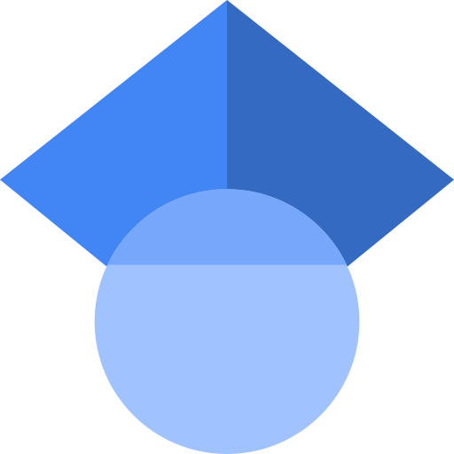

Publications
For a complete list of publications visit my profiles in

Google Scholar
This is the personal website of José Montero Amenedo, hosted on GitHub Pages.
PhD, Researcher and Docent in Engineering Science with Specialisation in Solid State Physics.
I am employed at the Division of Solid State Physics at The Ångström Laboratory, Uppsala University, Uppsala, Sweden. My research focuses on green nanotechnology, i.e., I am interested in the study of the possible applications of nanotechnology to minimize the environmental impact of human activities. Particulary, I specialize in developing optically-selective and dynamic coatings for smart and energy-efficient windows, which play a crucial role in sustainable building technologies.
I enjoy teaching and I am committed to educating the next generation of scientists and engineers to address the challenges of sustainable technology and environmental responsability.
I earned my PhD in Physics and MSc from Complutense University of Madrid, Spain, and my BSc from the University of Salamanca, Spain. My professional journey has taken me to prestigious research and higher education institutions across various countries, including CIEMAT in Spain (where I conducted my PhD research), IFE in Norway, and Uppsala University in Sweden.
For a complete list of publications visit my profiles in